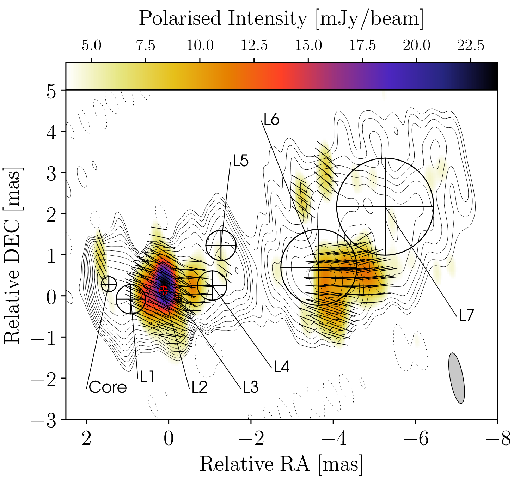
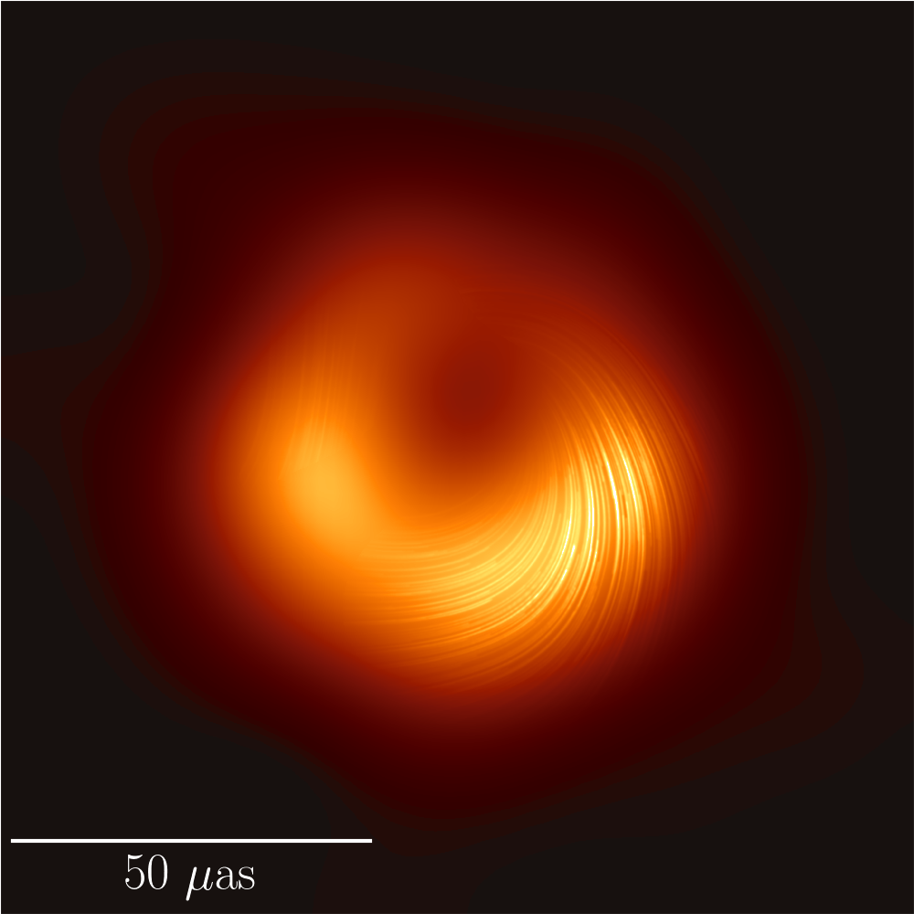

An overview of the reseach projects I am currently involved in.
SMILE
The SMILE project aims to
discriminate between different dark matter models by constraining the abundance of
so-called milli-lenses in the universe.
For this, we study about 5,000 sources using very-long-baseline interferometry
in the radio band. This resolution allows us to look for gravitational lens signals
on milliarcsecond scales.
This necessitates automatic calibration, imaging and data analysis solutions
that I am involved in.
A milli-lens candidate from Pötzl et al. 2025
RadioAstron
Spektr-R (Credit: Lavochkin Association)
The RadioAstron
project was a very-long-baseline interferometry mission relying on the Spektr-R spacecraft
with a 10-m radio antenna operating between 2011-2019.
The space antenna orbited around Earth with a maximum distance of 380,000 km,
offering exquitite resolution previously unachievable at cm-wavelengths.
This, together with its full polarization capabilities, allows studies of the
magnetic field and brightness temperature in AGN jets with unprecedented detail.
Data reduction and analysis is still ongoing for many observations conducted
during the operational period of RadioAstron.

The quasar 3C345 with RadioAstron at 1.7 GHz, Pötzl et al. 2021
Event Horizon Telescope

The polarized ring around the black hole shadow in M87 , EHT Collaboration 2021
The Event Horizon Telescope
project presented to the world the first image of a black hole shadow, in the galaxy M87, on April 10, 2019.
Since then, the EHT has also published images of the black hole in the galactic centre, SgrA*,
as well as polarization images tracing the magnetic fields near the event horizon.